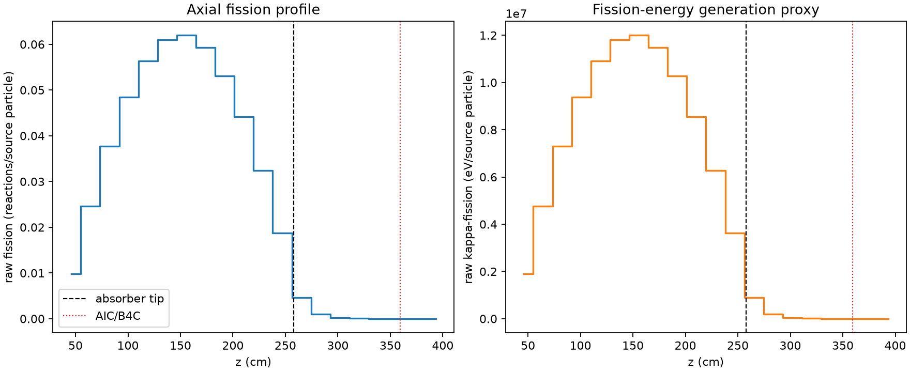
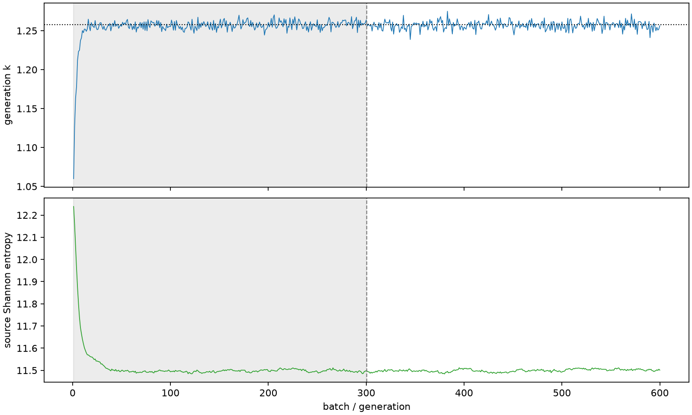

| field | value |
|---|---|
| experiment | V2-STAGE_256_OGRENCI_01-0013 |
| k | 1.257521713104684 |
| MC standard error | 0.00018135021772194054 |
| seconds | 1009.1012253980152 |
| acceptance | not_assessed |
| convergence | review_required |
Completed is output integrity only; physical and statistical review required. Zero tallies do not prove zero production or zero uncertainty.
| diagnostic | value |
|---|---|
| geometric fuel voxels | 5280 |
| zero fission tally voxels | 260 |
| low signal fuel voxels | 1215 |
| low signal fission share | 9.318727267039263e-05 |
| low signal kappa share | 9.322849117078617e-05 |
| important fission share | 0.9500911890363879 |
| previous filter included | 4065 |
| duration estimate s | 1562.5173488400023 |
| actual minus estimate s | -553.4161234419871 |
| fission relative MC error | statistics |
|---|---|
| all_geometric_fuel | {"voxels": 5280, "positive_mean_voxels": 5020, "zero_mean_voxels": 260, "undefined_relative_error_voxels": 260, "median": 0.010654732065384972, "p95": 0.7541401275796958, "maximum": 1.0000000000000002} |
| low_signal | {"voxels": 1215, "positive_mean_voxels": 955, "zero_mean_voxels": 260, "undefined_relative_error_voxels": 260, "median": 0.5303700303151075, "p95": 1.0, "maximum": 1.0000000000000002} |
| important_95pct | {"voxels": 2761, "positive_mean_voxels": 2761, "zero_mean_voxels": 0, "undefined_relative_error_voxels": 0, "median": 0.0076444718017122095, "p95": 0.01153658320751713, "maximum": 0.013965019157602595} |
| outside_previous_filter | {"voxels": 1215, "positive_mean_voxels": 955, "zero_mean_voxels": 260, "undefined_relative_error_voxels": 260, "median": 0.5303700303151075, "p95": 1.0, "maximum": 1.0000000000000002} |
| kappa_fission relative MC error | statistics |
|---|---|
| all_geometric_fuel | {"voxels": 5280, "positive_mean_voxels": 5020, "zero_mean_voxels": 260, "undefined_relative_error_voxels": 260, "median": 0.010643650830916146, "p95": 0.7533038201890109, "maximum": 1.0000000000000002} |
| low_signal | {"voxels": 1215, "positive_mean_voxels": 955, "zero_mean_voxels": 260, "undefined_relative_error_voxels": 260, "median": 0.5298576003011432, "p95": 1.0, "maximum": 1.0000000000000002} |
| important_95pct | {"voxels": 2761, "positive_mean_voxels": 2761, "zero_mean_voxels": 0, "undefined_relative_error_voxels": 0, "median": 0.007636649570018946, "p95": 0.011523333668812369, "maximum": 0.013949559088684652} |
| outside_previous_filter | {"voxels": 1215, "positive_mean_voxels": 955, "zero_mean_voxels": 260, "undefined_relative_error_voxels": 260, "median": 0.5298576003011432, "p95": 1.0, "maximum": 1.0000000000000002} |
| axial bin | fission share | kappa-fission share |
|---|---|---|
| 1 | 0.01919141779952405 | 0.01919219942000349 |
| 2 | 0.0480367784207424 | 0.048036553454614 |
| 3 | 0.0733967900823574 | 0.07339651962083091 |
| 4 | 0.09442604016789082 | 0.09442555281198137 |
| 5 | 0.10975953437875813 | 0.1097589865632978 |
| 6 | 0.11879280626165263 | 0.11879232423983196 |
| 7 | 0.12066827673333991 | 0.1206677564903117 |
| 8 | 0.11543800494056604 | 0.11543731472103258 |
| 9 | 0.10330151484865283 | 0.10330128359002162 |
| 10 | 0.08592149239331237 | 0.08592122182002908 |
| 11 | 0.06319609552352103 | 0.06319580456069918 |
| 12 | 0.03641375681116057 | 0.03641368287205961 |
| 13 | 0.008951891189771216 | 0.008954292366940194 |
| 14 | 0.0019162752249727354 | 0.0019169525955287608 |
| 15 | 0.00045270746950740415 | 0.0004528801159605864 |
| 16 | 0.00010498846424467449 | 0.00010502956961497314 |
| 17 | 2.3493771214279582e-05 | 2.3504294718134253e-05 |
| 18 | 6.757354255073027e-06 | 6.761512621874836e-06 |
| 19 | 1.3733091845212636e-06 | 1.374493947952236e-06 |
| 20 | 4.855371830538131e-09 | 4.885954175150701e-09 |
Histories include the inactive-to-active transition at batch 300. kappa-fission approximates fission energy production, not total heat deposition.

